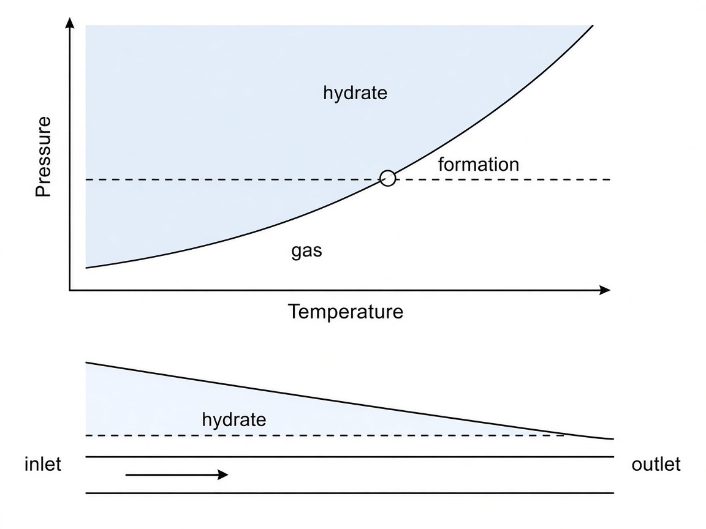
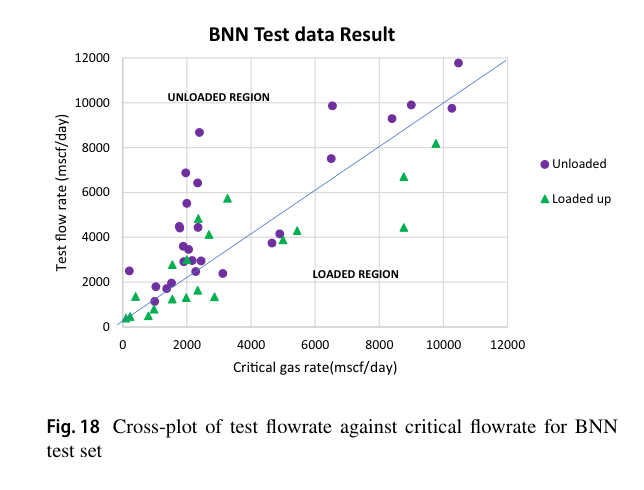

PhD candidate · Chemical engineering · University of Michigan · 2023–present
The challenge is no longer just predicting how atoms behave.
University of Michigan
It is making those predictions fast enough to explore more materials, test more ideas, and accelerate discovery.
I do that in the Lindsey Lab, as a MICDE Fellow. The models stay tied to the physics. The software runs on a laptop and on the SLURM clusters a lab already has. Advisor, Rebecca Lindsey.
The three pieces to open first. Everything else on this page is the same kind of problem at a different scale.
2026Research
TurboChIMES
A designer can try more chemistries before a long campaign.
Accurate atomistic models often cost too much to use while a material is still being designed. TurboChIMES, my first-author preprint, stacks machine-learned interatomic models so the simulation stays faithful and becomes fast enough to search with. This is the story the audience chose as People’s Choice at Michigan’s Three Minute Thesis.
Labs can reach a usable potential with less data and less compute.
A new chemistry usually means fitting an interatomic model all over again, and that fit is the slow, expensive part. With Rebecca Lindsey and colleagues at Lawrence Livermore, I am second author on a paper in npj Computational Materials that carries what a model has already learned into the next system.
A researcher gets a real local run and an interpretation in the same conversation.
A molecular-dynamics study still begins as a specialist’s input deck. MaterialSim is a public agent that turns one sentence into the simulation, computes properties such as structure and transport, and explains what came back. The engine runs locally.
The same four moves show up in the papers, the agents, and the services.
Keep what must stay true
The physics, the source, or the boundary stays fixed. The effort goes to the cost.
Run it here, then on the cluster
The first version runs on the machine in front of you. That same path moves onto SLURM, Docker, or Kubernetes.
Hide the hard part
A sentence, an API, or a calculator stands in front, so the person who built the model is not required later.
Leave the evidence on the result
The passage, the uncertainty, or the review stays attached, so a reader can see why the answer deserves weight.
Day to day that is Python and TypeScript, REST services, Docker and Kubernetes, SLURM, molecular dynamics, and machine-learned interatomic potentials.
More
2023–Software
ChIMES toolchainThe model can leave the notebook and run inside a simulator a lab already trusts.
A machine-learned interatomic model helps only after it can be fit, checked, and called from the simulator a lab already trusts. I work in the public ChIMES stack that does the active learning, the least-squares fit, and the handoff into outside codes.
EZRAA researcher can work locally the same day and send that same job to a cluster.
Open language models are free, and getting one installed, pointed at your papers, and onto a cluster is still its own project. EZRA downloads a model, runs an agent on the machine in front of you, prepares documents for that model, and stages the same job on SLURM.
2025ProductPrivate
EdnaThe archive stays searchable, and every answer stays attached to its source.
A question about a long technical archive is only useful when the answer can be traced to a page. Edna is a private assistant with a desktop app and a web client: you choose the folders, ask, and the reply points at the passage it used. It can run on one computer or as a service you operate.
2026Research
Alchemical compressionMaterials design can reach a wider set of elements.
Every added element multiplies the training burden of a machine-learned potential, so coverage stays narrow. With T. Sundberg and Rebecca Lindsey I am compressing that elemental space so one potential can span more of the periodic table. The direction is public as a 2026 AIChE contribution.
Earlier
From the University of Lagos through later collaborations, the papers use field data to see liquid loading, sand, and hydrate temperature early enough to act, and to weigh oil recovery together with carbon storage. Those losses are how domestic wells go offline, and the recovery work keeps carbon storage inside that same field decision. A related study improves biodiesel yield from waste fat by pairing experiment with computation.
2025Research
Droplet-film model for liquid loadingSee liquid loading in a gas well early enough to act before a shutdown.
When gas in a well slows down, liquid falls back, pressure rises, and production can stop. I built a physics-informed model of the droplet film behind that failure, with public documentation, extending the liquid-loading study I published with Kingsley Abhulimen.
Sand productionOperators get a clearer view of which wells need attention.
Sand produced with oil or gas wears out equipment and cuts a well’s output, and the warning often arrives after the damage. My first-author paper in Petroleum Science and Engineering uses field data to predict and manage that sand, on top of public notebooks for reservoir rock typing.
Carbon monoxide at 128 atoms. Multi-layer is TurboChIMES. It is the fast, low-error point next to the one-model baseline and the foundation potentials.
Schematic of the field pattern. Carbon dioxide is injected at the center, the plume spreads through the rock, and oil is produced at the corners. The journal file was not available to crop.
Measured and predicted yield, the residuals, and the error histogram.

2023Petroleum and Coal
Hydrate formation temperature
Schematic. Hydrate is the high-pressure side of the equilibrium curve, and cooling along the pipeline crosses into it. No open PDF was available to crop.

2022Journal of Petroleum Exploration and Production Technology